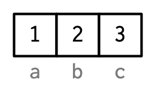

Vectors
David Gerard
2022-01-11
Learning Objectives
- Vector Types
- Vector Attributes
- Vectors with attributes: Lists/data frames/matrices/arrays
- Chapter 3 from Advanced R
- These lecture notes are mostly taken straight out of Hadley’s book. Many thanks for making my life easier.
- His images, which I use here, are licensed under

- The topic should be mostly review, but we will go a little deeper.
Vector Types
- Two types of vectors:
- Atomic: All elements of same type.
- List (“generic vectors”): Objects may be of different types.
- (low-key third type)
NULL: Absence of a vector.

Atomic Vectors
Four basic types:
- Logical: Either
TRUEorFALSE - Integer:
- Exactly an integer. Assign them by adding
Lbehind it (for “long integer”). -1L,0L,1L,2L,3L, etc…
- Exactly an integer. Assign them by adding
- Double:
- Decimal numbers.
1,1.0,1.01, etc…Inf,-Inf, andNaNare also doubles.
- Character:
- Anything in quotes:
"1","one","1 won one", etc…
- Logical: Either
Integers and doubles are together called “numerics”

You can determine the type with
typeof().x <- c(TRUE, FALSE) typeof(x)## [1] "logical"x <- c(0L, 1L) typeof(x)## [1] "integer"x <- c(0, 1) typeof(x)## [1] "double"x <- c("0", "1") typeof(x)## [1] "character"typeof(Inf)## [1] "double"typeof(NaN)## [1] "double"Determine the length of a vector using
length()length(x)## [1] 2Missing values are represented by
NA.NAis technically is a logical value.typeof(NA)## [1] "logical"This rarely matters because logicals get coerced to other types when needed.
typeof(c(1L, NA))## [1] "integer"typeof(c(1, NA))## [1] "double"typeof(c("1", NA))## [1] "character"But if you need missing values of other types, you can use
NA_integer_ ## integer NA NA_real_ ## double NA NA_character_ ## character NANever use
==when testing for missingness. It will returnNAsince it is always unknown if two unknowns are equal. Useis.na().
x <- c(NA, 1) x == NA## [1] NA NAis.na(x)## [1] TRUE FALSEYou can check the type with
is.logical(),is.integer(),is.double(), andis.character().is.logical(TRUE)## [1] TRUEis.integer(1L)## [1] TRUEis.double(1)## [1] TRUEis.character("1")## [1] TRUEAttempting to combine vectors of different types coerces them to one time. The order of preference is character > integer > double > logical.
typeof(c(1L, TRUE))## [1] "integer"typeof(c(1, 1L))## [1] "double"typeof(c("1", 1))## [1] "character"Exercise (from Advanced R): Predict the output:
c(1, FALSE) c("a", 1) c(TRUE, 1L)Exercise (from Advanced R): Explain these results:
1 == "1"## [1] TRUE-1 < FALSE## [1] TRUE"one" < 2## [1] FALSE
Attributes
Attributes are meta information applied to atomic vectors.
Many common objects (like matrices, arrays, factors, date-times) are just atomic vectors with special attributes.
You get and set attributes with
attr()a <- 1:3 attr(a, "x") <- "abcdef" # sets x attribute of vector a to be "abcdef" attr(a, "x") # retrieve the x attribute of vector a## [1] "abcdef"You can see all attributes of a vector with
attributes().attr(a, "y") <- 4:6 attributes(a)## $x ## [1] "abcdef" ## ## $y ## [1] 4 5 6Attributes are name-value pairs, and all of these attributes are associated with an object:

Most attributes are typically lost by most operations.
attributes(a[[1]])## NULLattributes(sum(a))## NULLTwo attributes are not log, names and dim.
Names
Names are are a character vector the same length as the atomic vector. Each name corresponds to a single element.
You could set names using
attr(), but you should not.x <- 1:3 attr(x, "names") <- c("a", "b", "c") attributes(x)## $names ## [1] "a" "b" "c"Names are so special, that there are special ways to create them and view them
x <- c(a = 1, b = 2, c = 3) names(x)## [1] "a" "b" "c"x <- 1:3 names(x) <- c("a", "b", "c") names(x)## [1] "a" "b" "c"The proper way to think about names is like this:

But each name corresponds to a specific element, so Hadley does it like this:

New Functions
typeof()attr()attributes()structure()names()dim()

This work is licensed under a Creative Commons Attribution-NonCommercial 4.0 International License.